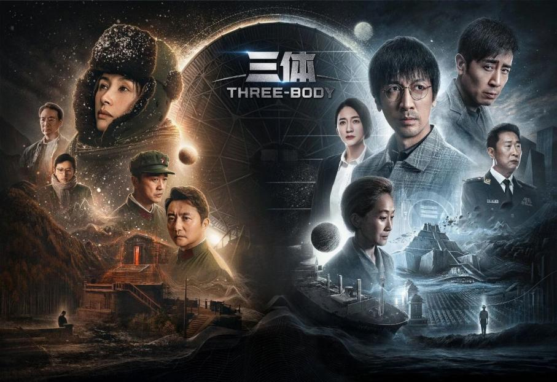
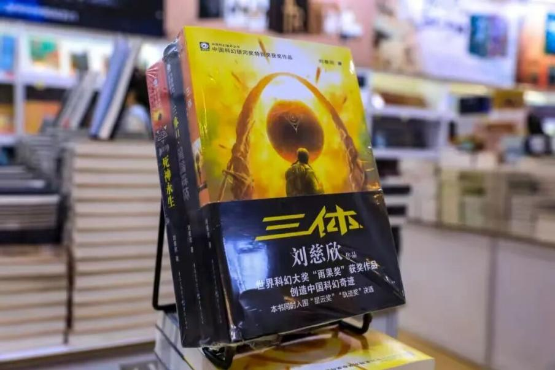

En 2006, la novela El problema de los tres cuerpos, del escritor chino de ciencia ficción Liu Cixin, comenzó a publicarse por entregas en la revista Science Fiction World. Dos décadas después, la obra no solo ha dejado huella, sino que también ha ofrecido una lente a través de la cual examinar los acontecimientos del mundo real. La inteligencia artificial (IA), los vuelos espaciales comerciales y la exploración interestelar avanzan a un ritmo notable, mientras la humanidad dirige su mirada hacia los confines del espacio. Recientemente, Diario del Pueblo conversó con Liu sobre la ciencia ficción y el futuro de la civilización humana.
– ¿Qué pensaba cuando escribió El problema de los tres cuerpos ¿Cómo han evolucionado sus perspectivas desde entonces?
Hace veinte años, mientras escribía El problema de los tres cuerpos en un ordenador, en mi oficina situada en lo profundo de las montañas, jamás imaginé que llegaría a tener tantos lectores. Ante todo, es una obra de ficción popular, concebida principalmente para contar una historia que deje a los lectores boquiabiertos. Si pudiera volver a aquel momento, quizá dudaría antes de incluir algunos de los temas más oscuros que se entrelazan en la trama. En su origen, eran recursos narrativos destinados a captar el interés de los lectores; sin embargo, con el tiempo, se han interpretado ampliamente como reflejos de lo que más tarde denominé «sociología cósmica». Al contar hoy con un público tan vasto, a veces siento que he encendido un fuego que ahora arde fuera de mi control.
'Con la IA escribiendo,
¿qué papel les quedará
a los autores?'
Mi visión fundamental del mundo ha permanecido inalterada durante las últimas dos décadas. No obstante, escribir se ha vuelto más difícil. Generar conceptos novedosos para la ciencia ficción resulta cada vez más complicado. Por un lado, la IA avanza a gran velocidad. No me preocupa ser reemplazado por ahora, pero ¿qué ocurrirá dentro de diez años? Si la IA es capaz de producir, en cinco minutos, un manuscrito superior a uno que a un escritor humano le llevaría cinco meses redactar, ¿qué papel les quedará a los autores. Por otro lado, la ciencia ficción ha impregnado casi todos los aspectos de nuestras vidas y de la sociedad. Paradójicamente, esto ha diluido su identidad como género literario diferenciado, lo que dificulta que los escritores de ciencia ficción prosperen a medida que su influencia sigue extendiéndose.

El problema de los tres cuerpos" loading="lazy" decoding="async" />– ¿Cuál es su opinión sobre la IA?
La mayoría de la gente se preocupa por si la IA reemplazará o conquistará a la humanidad. Mi postura es algo poco convencional: siento un gran aprecio por la IA. Los seres humanos tenemos limitaciones inherentes en cuanto a inteligencia, resistencia física y capacidad cognitiva. Evolucionamos para sobrevivir en la naturaleza salvaje, no para explorar el universo. Dadas nuestras capacidades actuales, la civilización humana nunca podrá expandirse más allá de la Tierra hacia el resto del universo.
'La IA todavía se queda corta
a la hora de generar ideas
verdaderamente originales'
La IA, sin embargo, podría ayudarnos a superar esas limitaciones innatas. Las aspiraciones más ambiciosas y los objetivos últimos de la humanidad podrían llegar a hacerse realidad utilizando la IA como catalizador. La IA apunta hacia el futuro de la civilización terrestre. Puede que ese futuro no pertenezca a los seres humanos, pero aun así será significativo. En mi rutina personal, rara vez utilizo la IA; la empleo principalmente como una herramienta de búsqueda avanzada. Nunca la he usado para escribir ficción. Dedico la mayor parte de mi tiempo creativo a desarrollar conceptos para mis historias, y la IA todavía se queda corta a la hora de generar ideas verdaderamente originales y disruptivas que no hayan existido antes.

El problema de los tres cuerpos " loading="lazy" decoding="async" />– ¿Cómo deberíamos prepararnos para una posible singularidad tecnológica?
Según lo entiendo, la singularidad se refiere al punto en el que la inteligencia de la IA supera rápidamente a la humana, provocando cambios inimaginables en todas las formas existentes de sociedad humana, así como en nuestros sistemas políticos y económicos. Sin embargo, este escenario podría ser una simplificación excesiva.
Incluso si la IA avanzara a esa velocidad, la humanidad aún tiene cartas que jugar y puede tomar diversas medidas para protegerse de las consecuencias negativas. Es más probable que otras tecnologías relacionadas —como la integración humano-máquina y las interfaces cerebro-computadora— avancen también con rapidez a la par de la IA. Podríamos ver, entonces, una fusión cada vez mayor entre los seres humanos y la IA. Como suele decirse: si no podemos competir con ella, tal vez podamos aprender a integrarnos con ella.
'Si yo viajara al espacio
me gustría confirmar
que no estamos solos'
– ¿Qué esperanzas tiene para el futuro de la exploración espacial?
Espero que la humanidad viaje cada vez más lejos en el espacio. Desde el alunizaje del Apolo 11, el espacio parece estar cada vez más a nuestro alcance. Espero que podamos explorar el espacio profundo, viajar a Marte y al cinturón de asteroides, y llegar a cuerpos celestes más distantes, incluidas las lunas de Júpiter. Debemos seguir mirando hacia afuera, apuntando a los confines más lejanos del universo observable.
Si yo viajara al espacio, mi prioridad sería pegar el rostro a una ventanilla y contemplar la Tierra. Si pudiera presenciar un solo momento en el universo, me gustaría ver el surgimiento de una civilización verdaderamente inteligente; confirmar que no estamos solos y que la comunicación entre especies distintas es posible.